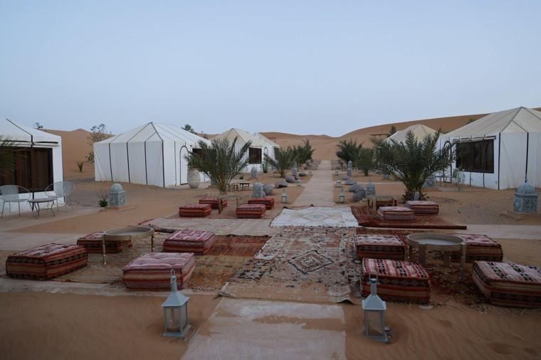

For most travellers, the night in the desert is the moment they remember long after the trip. But many arrive with questions: Is it comfortable? Is there a bathroom? Will I be cold? Here is how a typical night in an Erg Chebbi camp unfolds, hour by hour.
Late afternoon: the camel ride
Your driver brings you to the edge of the dunes near Merzouga in the late afternoon. You leave your main luggage safely in the vehicle or at the hotel and take only a small bag. The camel men help you climb on — the first rise of the camel always makes people laugh — and the caravan sets off into the sand.
The ride usually lasts between one and two hours, depending on where your camp is. Halfway, the caravan stops on a high dune so you can watch the sun go down over the Sahara. This is the time for photos: the sand turns orange, then red, then purple. If you prefer not to ride, a 4x4 transfer to the camp is always possible.
Evening: mint tea, dinner and music
You arrive at the camp as the light fades. Tea is served — sweet mint tea, poured from high to make the foam — and you have time to settle into your tent. Most camps today offer real beds, blankets and private bathrooms with showers, especially in the comfort and luxury categories; simpler camps have shared facilities.
Dinner is usually a soup or salads, followed by a tagine or couscous, cooked slowly and served in the main tent or outside under the sky. After dinner the team lights a fire, takes out the drums and sings traditional Berber songs. You are welcome to join in, or simply sit and listen.

Night: the sky
Away from the lights of the cities, the Sahara sky is one of the darkest you will ever see. On a clear night without moon, the Milky Way crosses the sky from one side to the other. Climb a small dune a few minutes from the camp, lie on the cold sand and let your eyes adjust for ten minutes — the number of stars will keep growing.
If you love photography, bring a small tripod; if not, just watch. Many guests tell us this silence is the strongest memory of their trip.
Morning: sunrise over Erg Chebbi
Your guide wakes you before dawn. Wrap yourself in a blanket or a jacket and climb the dune behind the camp: watching the first light reach the dunes is worth the early alarm. After breakfast in the camp, you return to Merzouga by camel or 4x4, where a shower and your driver are waiting to continue the journey.
Practical tips
Bring a warm layer even in summer, a head torch, a power bank and a small overnight bag. Tell us in advance about any dietary needs — the camp kitchen can easily prepare vegetarian meals. And if you dream of a special night, ask us about private tents or a romantic dinner in the dunes.
Para la mayoría de los viajeros, la noche en el desierto es el momento que recuerdan mucho tiempo después del viaje. Pero muchos llegan con preguntas: ¿es cómodo?, ¿hay baño?, ¿pasaré frío? Así transcurre una noche típica en un campamento de Erg Chebbi, hora a hora.
Al final de la tarde: el paseo en camello
Tu chófer te lleva al borde de las dunas cerca de Merzouga al final de la tarde. Dejas el equipaje principal seguro en el vehículo o en el hotel y llevas solo una mochila pequeña. Los camelleros te ayudan a subir —el primer movimiento del camello siempre hace reír— y la caravana se adentra en la arena.
El paseo suele durar entre una y dos horas, según dónde esté tu campamento. A mitad de camino, la caravana se detiene en una duna alta para ver la puesta de sol sobre el Sáhara. Es el momento de las fotos: la arena se vuelve naranja, luego roja y luego violeta. Si prefieres no montar, siempre es posible un traslado en 4x4 al campamento.
La noche: té a la menta, cena y música
Llegas al campamento cuando cae la luz. Te sirven té a la menta, dulce y vertido desde lo alto para hacer espuma, y tienes tiempo para instalarte en tu jaima. Hoy la mayoría de los campamentos ofrecen camas de verdad, mantas y baños privados con ducha, sobre todo en las categorías confort y lujo; los campamentos más sencillos tienen instalaciones compartidas.
La cena suele empezar con una sopa o ensaladas, seguidas de un tajín o un cuscús cocinado a fuego lento, servido en la jaima principal o fuera bajo el cielo. Después de cenar, el equipo enciende un fuego, saca los tambores y canta canciones bereberes tradicionales. Puedes unirte o simplemente sentarte a escuchar.
La noche: el cielo
Lejos de las luces de las ciudades, el cielo del Sáhara es uno de los más oscuros que verás nunca. En una noche despejada y sin luna, la Vía Láctea cruza el cielo de un lado a otro. Sube a una duna pequeña a pocos minutos del campamento, túmbate en la arena fría y deja que tus ojos se acostumbren durante diez minutos: el número de estrellas no dejará de crecer.
Si te gusta la fotografía, trae un trípode pequeño; si no, simplemente mira. Muchos viajeros nos dicen que ese silencio es el recuerdo más fuerte de su viaje.
La mañana: amanecer sobre Erg Chebbi
Tu guía te despierta antes del alba. Abrígate con una manta o una chaqueta y sube a la duna detrás del campamento: ver cómo la primera luz alcanza las dunas merece el madrugón. Después del desayuno en el campamento, vuelves a Merzouga en camello o en 4x4, donde te esperan una ducha y tu chófer para continuar el viaje.
Consejos prácticos
Lleva algo de abrigo incluso en verano, una linterna frontal, una batería externa y una mochila pequeña para la noche. Avísanos con antelación de cualquier necesidad alimentaria: la cocina del campamento puede preparar fácilmente comidas vegetarianas. Y si sueñas con una noche especial, pregúntanos por jaimas privadas o una cena romántica en las dunas.
Per la maggior parte dei viaggiatori, la notte nel deserto è il momento che ricordano a lungo dopo il viaggio. Ma molti arrivano con delle domande: è comodo? C’è un bagno? Avrò freddo? Ecco come si svolge una notte tipica in un campo di Erg Chebbi, ora per ora.
Tardo pomeriggio: il giro in cammello
Il tuo autista ti porta ai margini delle dune vicino a Merzouga nel tardo pomeriggio. Lasci il bagaglio principale al sicuro nel veicolo o in hotel e porti solo uno zainetto. I cammellieri ti aiutano a salire —il primo movimento del cammello fa sempre ridere— e la carovana si addentra nella sabbia.
Il giro dura di solito da una a due ore, a seconda di dove si trova il campo. A metà strada la carovana si ferma su una duna alta per guardare il tramonto sul Sahara. È il momento delle foto: la sabbia diventa arancione, poi rossa, poi viola. Se preferisci non salire in cammello, è sempre possibile un trasferimento in 4x4 al campo.
La sera: tè alla menta, cena e musica
Arrivi al campo mentre la luce cala. Ti servono il tè alla menta, dolce e versato dall’alto per fare la schiuma, e hai il tempo di sistemarti in tenda. Oggi la maggior parte dei campi offre veri letti, coperte e bagni privati con doccia, soprattutto nelle categorie comfort e lusso; i campi più semplici hanno servizi condivisi.
La cena inizia di solito con una zuppa o delle insalate, seguite da un tajine o un cuscus cotto lentamente, servito nella tenda principale o all’aperto sotto il cielo. Dopo cena il team accende il fuoco, tira fuori i tamburi e canta canzoni berbere tradizionali. Puoi unirti o semplicemente sederti ad ascoltare.
La notte: il cielo
Lontano dalle luci delle città, il cielo del Sahara è uno dei più bui che vedrai mai. In una notte limpida e senza luna, la Via Lattea attraversa il cielo da un lato all’altro. Sali su una piccola duna a pochi minuti dal campo, sdraiati sulla sabbia fredda e lascia che gli occhi si abituino per dieci minuti: il numero di stelle continuerà a crescere.
Se ami la fotografia, porta un piccolo treppiede; altrimenti, guarda e basta. Molti ospiti ci dicono che quel silenzio è il ricordo più forte del loro viaggio.
Il mattino: l’alba su Erg Chebbi
La guida ti sveglia prima dell’alba. Avvolgiti in una coperta o in una giacca e sali sulla duna dietro il campo: vedere la prima luce raggiungere le dune vale la sveglia presto. Dopo la colazione al campo torni a Merzouga in cammello o in 4x4, dove ti aspettano una doccia e il tuo autista per continuare il viaggio.
Consigli pratici
Porta uno strato caldo anche d’estate, una torcia frontale, un power bank e uno zainetto per la notte. Avvisaci in anticipo di eventuali esigenze alimentari: la cucina del campo può preparare facilmente pasti vegetariani. E se sogni una notte speciale, chiedici delle tende private o di una cena romantica tra le dune.